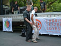

2005.07.07., csütörtök
tomcat
blog
droidzóna
levrov
Kétnaponta íródó blogomban ma egy kissé félresikerült, ám nem várt tanulságokkal szolgáló szabotázsakcióról, illetve a budapesti melegfelvonulásról lesz szó. Nyilván észrevettétek, meg mondtam is, hogy mostanság nem volt idõm blogot írni. Most már elmondhatom, hogy azért nem, mert a blogot általában a nap legvégén, hajnali 1-2 óra felé körmölöm, az elmúlt napokban pedig ebben az idõpontban fontosabb dolgom akadt - nevezetesen a Lánchíd pillérjének tetején üldögélni. Mi a fenét kerestem én ott, hogy mentem fel, és mi köze ennek a melegekhez? Csak menjünk szépen, sorjában.
Mindjárt válaszolnék arra a sokak által feltett kérdésre, hogy mi bajom nekem a melegekkel, tán csak nem homofób vagyok-e. Nos, ha már itt tartunk, meglehetõsen undorít az egymáshoz tapadó férfitestek gondolata, de hát ez már csak így van egy egészséges heteroszexuális férfi esetében. Egyszer elmondtam ezt bizonyos nem megfelelõ világnézetû embereknek, mire aggódva néztek rám, és óvatosan megjegyezték, hogy orvoshoz kellene fordulnom, mert a homofóbia ma már gyógyítható. Késõbb utánanéztem, és tényleg. Milyen szerencse, nem?
De alapvetõen nem azzal van bajom, hogy valaki homokos, mert hát legyen, attól még lehet tisztességes ember, s istenem, egy kis defekttel született. Nekem semmi közöm a hálószobájához, és ezzel aztán tényleg nem árt senkinek. Az már érdekesebb kérdés, hogy egy homokos miért megy ki az utcára hangoztatni, hogy õ micsoda. De még ezt is megérteném, valóban sokan bántják õket ok nélkül. Hanem amikor jönnek a sáfrányszínû tüllruhába öltözött, boát lóbáló buzikurvák, na ott már eldobja az agyam a tolerancia amúgy sem vastag ékszíját, és legszívesebben nekiállnék aknavetõvel rendet tenni köztük.
Nem azért, mert homokos. Nem azért, mert így érzi jól magát. Hanem mert undorító, erkölcstelen magamutogató. Ugyanígy zavarna, ha heteroszexuális kurvák vonulnának fel. Ugyanígy zavarna, ha a heteroszexuális prostitúciót mutogatnák az utcán, mint elfogadandó és tolerálandó példát. Persze, legyenek kurvák, mindig is voltak, s ugyanígy buzik is mindig voltak, de nekem ne vonuljanak az orrom elé, és mutogassák magukat, mert ez engem undorít, visszataszít, és féltem tõle nem létezõ gyermekeimet, meg mások létezõ gyermekeit. Kikérem magamnak, hogy kerülnöm kelljen a belvárost egy szép nyári napon, mert ott valami olyannal kérkednek, ami a normális emberben hányingert kelt.
És most javasolnék valamit, kedves melegek. A meleg büszkeség helyett ideje lenne feltalálni a meleg szerénységet. Ha már annyira aktívkodtok, és jó sok pénzetek is van - ne mondjátok, hogy nincs, az a cucc, amivel felvonultatok, jó pár milliót kóstálhatott - dolgozhatnátok azon, hogy mi, a heteroszexuális többség ne a csiricsáré ruhába csomagolt transzvesztita prostikat lássuk, ha valahol megjelennek a melegek. Ne olyannak mutassátok magatokat, mint amilyennek az elõítéletek tartanak. Ha végigmegy egy kamion a városon, és azon cicaruhás fartúró köcsögök ugrándoznak, az pontosan azt mutatja, hogy a melegek cicaruhás fartúró köcsögök. Ha normális, hétköznapi emberként jelennétek meg, egyszerûen felvonulva, és a "kapjátok be, hülye heterók, mi úgyis tutibbak vagyunk" hozzáállás helyett valami olyan üzenetet fogalmaznátok meg, hogy "köszönjük, hogy elfogadtok", akkor sokkal többen ismernének és fogadnának el benneteket.
Ha lenne egy melegszervezet, amely megszervezne egy ilyen rendhagyó melegfelvonulást, magam állnék a menet élére. Nem azért, mert buzi vagyok, hanem mert egyetértenék a céljával. Addig azonban, amíg fartúró hímkurvákat kell bámulnom, marad az ellenállás.
Mert hát mi ellenálltunk. Igaz, nem sikerült egészen, de legalább megpróbáltuk. Istenem, nekünk se sikerülhet mindig minden.
Még hónapokkal ezelõtt gondolkodtunk, hogy mivel lehetne rávenni a buzikat, hogy kicsit kapjanak már észbe. Az erõszakos megoldásokat - Claymore-akna, tolólapos teherautó, miegymás - hamar elvetettük, majd körvonalazódni kezdett egy érdekes terv. Ugyebár, a buzikat ezer rendõr védi, nevelõ célzattal meg se lehet õket közelíteni. No de nem számítanak egy felülrõl érkezõ meglepetésre. És ugyebár át fognak menni a Lánchídon. Tehát próbáljunk valami érdekességet felapplikálni a hídra...
No persze, a Lánchídra feljutni nem tréfadolog. Idõnként egyesek megpróbálják megmászni, ezeket rendszerint a tûzoltóság szedi le, és komolyságtól függõen a Lipiben vagy a kerületi kapitányságon beszélik le az újbóli próbálkozásról. No meg persze nem is veszélytelen dolog a víz felett ötven méter magasan pilinckázni, bár a betonig csak harminc métert lehet esni. Mi pedig nem csak hogy felmenni akarunk, de mindjárt fel is szerelnénk egy vicces kis szerkezetet. Ez pedig a következõ lenne. Egy jókora molinó transzparenst felcsavarunk két PVC csõre. Ezt lelógatjuk a híd tetejérõl, összecsukva, damillal összekötve. A damilra egy rádió-távirányítású szerkezet kerül, ami egy távoli gombnyomásra elégeti a damilt. A transzparens letekeredik, pont a buzik feje fölött, mellesleg kiesik belõle pár száz tojás, és nesze, megkapták.
Igen, van olyan hülye haveri köröm, hogy ebben benne legyenek. Megmászni a Lánchidat? Hogyne, bármikor. Rádiódetonátor? Azt is lehet. Molinót, mûanyag csövet meg lehet kapni a Praktikerben. Így esett, hogy nagyjából e hét hétfõjén a Lánchídon álltunk Loydival és BiG-gel, és nézegettünk felfelé okosan. Szóval oda kellene felmenni. Jó.
Elsõ lépésben kosaras emelõkocsit hoztunk, azzal emelkedtünk fel
Sajnos nem ért fel a tetejéig, csak a címerig. Mindenesetre érdekes, hogy a kutyát nem érdekelte, mit csinál egy kosaras emelõkocsi éjjel háromkor a Lánchídon.
Kissé lelombozva mentünk haza, a tetõ eléréséhez ugyanis akkora daruskocsi kellett volna, ami már két sávot foglal el. De hát biztosan van valami módja a feljutásnak, mondogattuk, és meg is tudtuk, mi az.
Na, és akkor most egy fontos dolog. Az, hogy mi hülyék vagyunk, az a mi dolgunk. Az, hogy hogyan nyírjuk ki magunkat, szintén. De kedves olvasóimnak ezennel határozottan megtiltom, hogy az itt leírtakat utánunk csinálják. Különösen a 18 év alattiaknak. Aki fel merészel mászni a Lánchídra az itt leírt módon, annak a tökét letépem. Comprendé? A Lánchíd nem mászóka!
Naszóval. Kiderült, hogy a Lánchíd teteje mindenféle daruskocsi nélkül is elérhetõ. Ehhez "mindössze" fel kell mászni a két pillér között, a déli láncon (vagyis amelyik az Erzsébet-híd felé esik.) A lánc mellett egy elég instabil korlát ad némi biztonságérzetet, már ha beszélhetünk ilyenrõl, amikor az ember egy nyolcemeletes ház magasából bámul le a Dunára, egy víztõl síkos, alig félméteres fémfelületen állva. A lánc végéhez érve, a pillérnél egy rejtett ajtó van, mind a pesti, mind a budai pilléren. Ezen lehet bejutni a pillér belsejébe, a lánckamrába.
A rejtekajtót ez a zár tartja bezárva. Kinyitásához jókora erõ kell.
Ez a kép nagyon laza, csak az nem látszik rajta, hogy bizony nem két centi a mélység alattunk. Még egyszer mondom, hogy aki nem szeretne tolószéket kockáztatni, ne másszon fel ide.
Az ajtó szemrevételezése és rövid, hasztalan piszkálgatása után visszapipiskedtünk a láncon. Közben egyébként érdekes extrémsport a közeledõ autókat figyelni, mert a rendõrautót csak akkor lehet felismerni, ha már túl közel van, tehát minden egyes motorzúgásnál el kell dönteni, elég alacsonyan vagyunk-e már, hogy leugorjunk. Rendõrautó azonban nem jött.
Másnap Loydival próbát tettünk a pesti pillérrel. Nem bíztam a sikerben, de csodák csodája, az ajtó nyitva volt! Nem könnyû megmozdítani, de kinyílt. Vele együtt kinyílik egy kis belépõplatform, ami elvileg biztonságos, de a biztonság relatív dolog, mint arra odafenn könnyû rájönni. Bemásztunk és becsuktuk az ajtót, mert hát mégiscsak feltûnõ, ha csak úgy nyitvahagyogatjuk.
A pillér belül üreges. Belsejében egy létrán lemászva egy körülbelül harminc négyzetméteres kamrába juthatunk. Itt áll a két láncbak, rajtuk a láncok. A láncnyílásokon ki lehet látni Budára és Pestre. Régi falfirkák díszelegnek mindenütt, s a porban elégett tûzijáték-rakéták maradványai hevernek. Poros, koszos hely, olyan, mint egy régi padlás. Érdekes, hogy az egész kamra vasbetonból van, míg a budai részben még a régi téglaépítmény. Ez azért van, mert 1945-ben, amikor a hidat felrobbantották, a pesti pillérbõl teljesen kiszakadtak a láncok, leomlott a lánckamra is, a budai pedig viszonylag épen maradt. A lánckamra közepén áll egy létra, ezen lehet felmászni a híd legtetejére. Útközben van még egy üres szint.
A híd teteje meglehetõsen parás hely. Nem lapos, hanem enyhén lejt, bádoggal van fedve, és a létra kapaszkodóján kívül semmiféle korlát vagy más védelem nincs. Innen bizony igen szép nagyot placcsan, aki leesik, még ha a vízbe érkezik is. A tetõrõl egy újabb létra vezet le a címer fölött 3-4 méterrel körülfutó peremre. Na, ez aztán végképp beteg egy hely: alig egy lépés széles, és semmiféle korlát nincs, csak egy kapaszkodó fut körbe térdmagasságban. Nekünk ráadásul éppen ide kellett felpakolnunk a kis meglepetésünket.
A budai pillér bezárt ajtaja gondolkodásra késztetett. Ha ott nem lehet bejutni, vajon máshol lehet-e? Például van-e a hídtest alatt szerelõjárda, mint például az Árpád-hídon? Ennek ellenõrzésére Loydi a budai oldalon felkapaszkodott a hídtestre, bemutatott néhány érdekes szertorna-gyakorlatot úgy hat méter magasan, de amint meggyõzõdött róla, hogy a híd alján nincs járda, és tapasztalta, hogy a híd alatt nyolcvannal elszáguldó kamionok szele elõbb-utóbb lerántja onnan, inkább visszaereszkedett.
A következõ estén, azaz péntek este már a teljes felszerelést vittük. Négy kétméteres PVC csövet, hátizsákokban a molinót, a detonátort és szerszámokat, meg mindent, ami odafenn kellhet. Persze ezzel már nem lehetett csak úgy felszaladni, elvégre elég nehéz lenne megmagyarázni a kapitányságon, hogy mit kerestünk éjjel kettõkor a hídon egy roppant gyanús rádió-távirányítású egységgel. A kocsit a Várhegy túloldalán parkoltuk le, és elsõként a Várból vettük szemügyre a terepet.
Hát, amit láttunk, nem tetszett. A híd ugyanis le volt zárva, és tele volt rendõrautókkal! Munkások mindenféle dekorációkat szereltek, bódékat ácsoltak, furgonok rohangásztak fel-alá. Ó, remek, mondtam, hát most mi lesz? Mit mondjunk, ha valaki megkérdezi, hová cipelünk egy köteg PVC csövet a Lánchídon az éjszaka közepén, fekete álcázóruhában? Meg pláne hová mászunk a láncon... Némi várakozás után azonban a rendõrautók elhúztak, csak pár melós maradt, illetve a pesti oldalon biztonsági õrök. Ahogy a cuccokat felhordtuk a hídra, abban volt némi feeling a Commandos címû játékból, csak ezt négy elitkommandós helyett négy balfasszal játszottuk. Lima és Edi lent maradtak figyelni, nem mászik-e utánunk valaki; mi pedig hárman, BiG, Loydi és én elindultunk felfelé hátizsákokkal és szerszámokkal.
Én másztam elöl, mert rám hárult az ezidáig makacskodó ajtó kinyitása. Már javában piszkálgattam a zárat, amikor lenéztem, és láttam, hogy a többiek még mindig odalenn állnak. Késõbb megtudtam, hogy éppen hogy felértem, a budai oldalról elindult Pestre egy rendõrautó. Loydi a lánc jó egyharmadától ugrott le hátizsákostul, vagy négy méter magasból, csoda, hogy nem kente szét magát a betonon. Rövidesen azonban mindhárman a lánc tetején voltunk, és sikerült kinyitni azt a fránya ajtót. Pillanatok alatt bedobáltuk a cuccot, beugrottunk és becsuktuk az ajtót. Ebben csak a bent fészkelõ galambcsalád próbált megzavarni, melynek egyik tagja elõször az én tarkómnak repült neki, hogy egy kicsit belegabalyodjon a kapucnimba, majd amikor kihajítottam az éjszakába, pont pofán repülte Loydit, aki rohadtul örült ennek, miközben harminc méter magasan próbált átmászni a láncról a nyílásba. De végül bent voltunk, egyben, és pár perc alatt kiderült, hogy nem láttak meg bennünket. Most már zavartalanul összeszerelhettük a transzparenst.
Mit mondjak, jó két órán át eltartott a koromsötétben, míg végeztünk, és a végére nem csak hogy úgy néztünk ki, mint a disznók, de majd' ki is száradtunk a poros, meleg hídkamrában. Ráadásul mire elkészültünk, odakint kivilágosodott. Rövid tanácskozás következett. Most mi a tök legyen? Ha leszednek a hídról, talán még terrorcselekmény elõkészítésével is meggyanúsítanak. De mi van, ha nem? Lent nem voltak rendõrök, csak munkások. Végül úgy döntöttünk, megreszkírozzuk a dolgot, lesz, ami lesz.
Hogy még jobb legyen a világ, odakint esett az esõ, a bádogtetõ pedig csúszott, mint a jég. Loydi majdnem le is zuhant, szerencsére kikötötte magát ipari alpinista hevederrel, az fogta meg. (Még egyszer mondom: ne menjetek fel oda.) BiG kevéssé zavartatta magát a mélység miatt, lévén ejtõernyõs, és meglepõ módon én se szédültem különösebben, hogy volt mit csinálni. Leeresztettük a transzparenst, kötéllel rögzítettük, majd felszereltük rá a gyújtószerkezetet és hurrá, elkészült. Nem volt szép, de elkészült.
Lima felvétele a szerelésrõl, valamikor hajnali fél öt körül
Lejöttünk
- Remek - mondtuk kimerülten - most már csak ki kell bírnia délutánig.
- És mûködnie kell.
- Ja, az is.
Azzal hazamentünk aludni.
Délután fél négy körül az Alagút tetején ülve, detonátort készenlétben tartva vártuk a buzikat. Azok pedig jöttek is.
- Na, mûködni fog? - kérdezte Loydi.
- Nem tudom - feleltem, és megnyomtam a gombot.
Várunk, várunk...
És a buzik jöttek is!
Semmi sem történt.
- Basszameg.
Nyomkodtam egy kicsit, de még mindig semmi.
- Talán túl messze vagyunk.
- De hát nyolcszáz méterig mûködik!
- Akkor is. Menjünk közelebb!
Lerohantunk a hídfõhöz, végül már egészen a pillérig mentünk, de az a kurva gyújtószerkezet nem indult be. A buzik meg elvonultak. Basszameg, nem sikerült!! De hát nem lehet mindig karácsony.
- Na jó. Akkor most menjünk, és nézzük meg, mi történt vele - mondtam.
Haveri köröm összetételérõl az imént már értekeztem, ebbõl következõleg Loydinak semmi kifogása nem volt az ellen, hogy a környéken nyüzsgõ ezer rendõr és százezer turista jelenléte ellenére fényes nappal felmásszunk a pillérre.
- Jó.
Pillanatok alatt odafenn voltunk. Azt hiszitek, érdekelt valakit? Pár turista bámult felfelé szájtátva, jé, ezek felmennek, de ennyi volt a figyelem. Odafenn kiderült, hogy a damilt elégetni hivatott grafitszál szakadt el idõ elõtt.
- És most mit csináljunk ezzel? Engedjük le?
- De akkor kiesnek a tojások.
- Majd elugranak alóla.
- Hmm... És mi lenne, ha szólnánk a rendõrségnek, hogy bombát találtunk?
- Bombát?
- Hát, annak látszik, nem? Egy nagy szerkezet, drótokkal meg mindennel...
Mármost tényleg, mit reagál a rendõrség arra, ha valaki bombát talál a Lánchíd tetején? Telefon elõ, felhívtuk õket.
- Jó napot kívánok, az XYZ jelvényszámú polgárõr vagyok. A Lánchíd tetejérõl beszélek. Egy bombának látszó tárgy van itt.
- Nincs szabad emberünk!
- De hát itt áll egy csomó rendõr a híd körül, valamelyik nem jöhetne fel megnézni?
- Azok nem hagyhatják el a helyüket!
- De hát akkor mit csináljunk ezzel itt?
- Hát, csináljanak valamit!
- Jó, majd csinálunk, viszhall.
Ennyi. Az egy dolog, hogy transzparens helyett akár tényleg bombát is felszerelhettünk volna a Lánchídra, mégpedig a leggyengébb pontjára, az elmúlt éjszaka során többször is, miközben Lamperth Mónika "fokozott terrorellenes készültségbe" helyezte a rendõrséget. De amikor felhívjuk õket azzal, hogy gyanús tárgy van a pilléren, azt mondják, nincs rá ember. Bravó, Fakabát Rt. Meg persze azt se kérdezte senki, mit mászkálunk mi ott fent, csak Athináék kaptak szívszélhûdést az Alagút tetején, hiszen "öt perc és visszajövünk" felkiáltással pályáztunk el, és arról szó sem volt, hogy a híd tetejéig meg sem állunk.
Fogtam a rádiót és belehajítottam fentrõl a Dunába. A transzparenst meg leengedtük. Legalább utólag legyen ott. Pár tévéhíradó állítólag mutatta is, de sajnos a várt hatás elmaradt. Ez van, buzik, majd jövõre jobban csináljuk! Mindenesetre a franc se fog legközelebb éjszaka, titokban kommandózni, majd lecsapunk és kész.
Felmentünk
Piszkálgatás
A tábla legördül
Nesztek!
A tojásokat feltakarították, mire lemásztunk
Miután ezzel a rádiós csodaeszközzel befürödtünk, mutatnék néhány képet a Tabánban fesztiválozó buzeránsokról. Mondjuk azzal nem lenne semmi gond, ha ott buliznának egy kicsit, aztán hazahúznának. De csak nézzétek meg, miféle alakok ezek, aztán lehet rinyálni, hogy miért akartuk õket beteríteni tojással.
A Tabán bejáratánál mindjárt megtaláltak minket a BRFK közrendvédelmisek. Már ismerjük egymást, még olvassák is a blogot (üdv nekik). Felírtak minket a rosszak közé, Reggie-t meg félreállították, mert nála volt a pisztolya, és azzal állítólag bántani lehet a buzikat. Athina, Loydi és én bemehettünk, miután alaposan végignézték táskáink tartalmát. Rövid képriport következik a buzirezervátumból.
"Sok itt a köcsög, kevés a biztonság."
Buzik. Érdekes módon idén is ugyanaz a tíz-húsz homokos táncikált összevissza, mint tavaly. Alig százan voltak a Tabánban, közülük is csak ennyien voltak valóban melegek.
Táncoló buzik
Szép ember. Érdemes megfigyelni a testén a Kaposi-szarkómákat, ami az elõrehaladott állapotban levõ AIDS tünete.

Buzitánc
Arcfestés
A TV2 stábja nagyon aggodalmasan figyelt, és folyamatosan igyekezett úgy fordulni, nehogy a kamera elé kerüljek. Akart a franc, majd szól a Havas, ha kellek.
Buzik nézik a buzikat
Lányfiú
Vajon róluk mintázta Sala-Lieber Gyöngyi a berlini magyar mackó figuráit? A mûvésznõ egyébként a mai napig sem méltatta válaszra levelemet.
Volt itt egy nagyon szép farkaskutya is. Hogy miért, nem derült ki.

További buzzancsok
A nyár slágere a fasznyalóka
Anyuka és gyermekei. Hadd lássanak AIDS-es buzit segget riszálni, ugyebár.
A fent látható anyukát egyébként megkérdeztem, miért hozta el ide a gyerekeket. Olyan döbbenten nézett rám, mintha azt kérdeztem volna, miért van két lába, vagy miért visel ruhát az utcán.
- Hát mert el akartam jönni, és nem volt kire bíznom õket! - felelte.
- Nem félti õket?
- Mitõl?
- Hogy valami olyasmit látnak itt, ami nem feltétlenül nekik való.
- Ugyan mit? Nem látok itt semmi ilyesmit!
Kedves vadliberálisok és Tomcat-utálók, akik mindenáron el akarjátok mondani a világnak, hogy Tomcat egy náci, aki mellesleg lop, csal és hazudik, mellesleg pedig olyan hülye! Íme, itt a lehetõség, hogy rémtörténeteket költsetek rólam a fórumaitokban, illetve gúnyosan vigyorogjatok az akció sikertelenségén. Hát igen, ezt most elbasztuk. De azért érdekes volt.